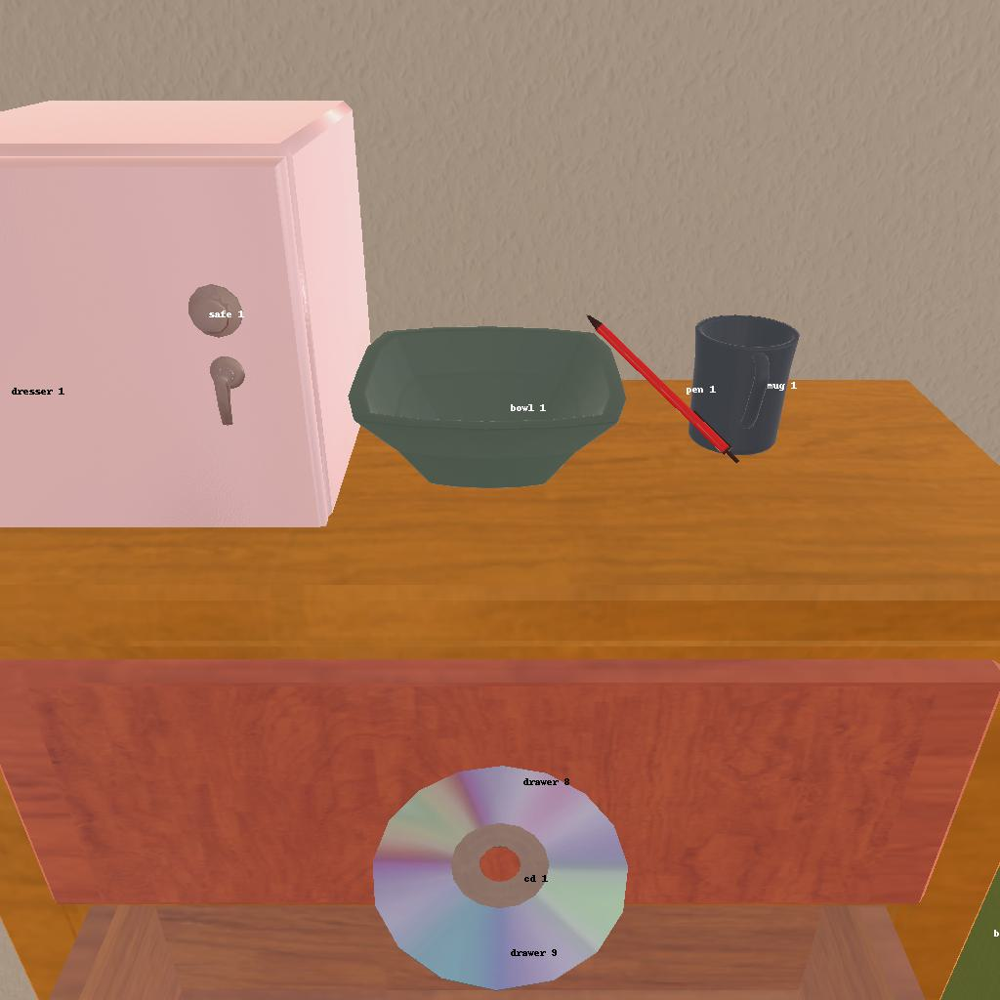

---------------------------------------------------------task: 6---------------------------------------------------------
--------------------------------------------------------------------------------------------------------------------------------------------------------------------
--------------------------------------------------------------------------------------------------------------------------------------------------------------------
Step:--------------------------------------------------------------------------16-------------------------------------------------------------------------------
----------------------------------------
VLM Prompt:
Image1:
Image2:
**Instruction**
1. Analyze the provided image to identify all visible household objects, focusing on those relevant to the task description "put some cd on safe."
2. Use the analysis of the image and the task hint "The agent must find an object of the desired type, pick it up, find the correct location to place it, and put it down there." to answer the question: what is the most reasonable action in the choices for the task description "put some cd on safe"?
4. Decide and write the answer using the template: The answer is: (i): , where i is the real number. If there is no desired object in the image, search every place based on **Initial Observation** to find the object. And if no one is exactly correct, choose a similar answer.
**Initial Observation**
You are in the middle of a room. Looking quickly around you, you can see bed (1-2), dresser (1), sidetable (1-2), drawer (1-11), desk (1), garbagecan (1), safe (1)
**Answer Choices**
(1): go to bed 1
(2): go to dresser 1
(3): go to bed 2
(4): go to sidetable 1
(5): go to drawer 1
(6): go to drawer 2
(7): go to sidetable 2
(8): go to drawer 3
(9): go to drawer 4
(10): go to desk 1
(11): go to garbagecan 1
(12): go to drawer 5
(13): go to drawer 6
(14): go to drawer 7
(15): go to drawer 8
(16): go to drawer 10
(17): go to drawer 11
(18): go to safe 1
(19): close drawer 9
(20): put cd 1 in/on drawer 9
**Answer**
Let's think step by step by following the instructions.
----------------------------------------
----------------------------------------
Original Response:
First, we need to identify all visible household objects related to the task "put some cd on safe." In the images, we can see a CD labeled "cd 1" which is placed on drawer 9, and there is a safe labeled "safe 1."
Next, based on the task hint, we need to pick up the CD and find the correct location to place it, which is on the safe.
Among the answer choices, the most reasonable action to accomplish the task is to go to the safe since we have already identified the CD and its location. However, before we can put the CD on the safe, we need to pick it up from drawer 9.
Therefore, the correct sequence of actions would be:
- Go to drawer 9 (where the CD is located)
- Pick up the CD
- Go to safe 1
- Put the CD on safe 1
However, the provided answer choices do not include an option to pick up the CD. The closest action related to interacting with the CD and the drawer is "close drawer 9," but this does not achieve the task goal.
Given the constraints, the most reasonable action from the choices provided would be to close drawer 9, as it is the only action related to the CD's current location, and it may imply picking up the CD before closing the drawer.
The answer is: (19): close drawer 9.
----------------------------------------
----------------------------------------
>>> Refine Original VLM Response and Get Pure Action: close drawer 9
----------------------------------------
-----------------------------------------------------------------
Running time: 15.285867929458618 seconds
Total Money: 2.8348799999999996
-----------------------------------------------------------------
-----------------------------------------------------------------
Text Observation:You close the drawer 9.
-----------------------------------------------------------------
UNSUCCEED